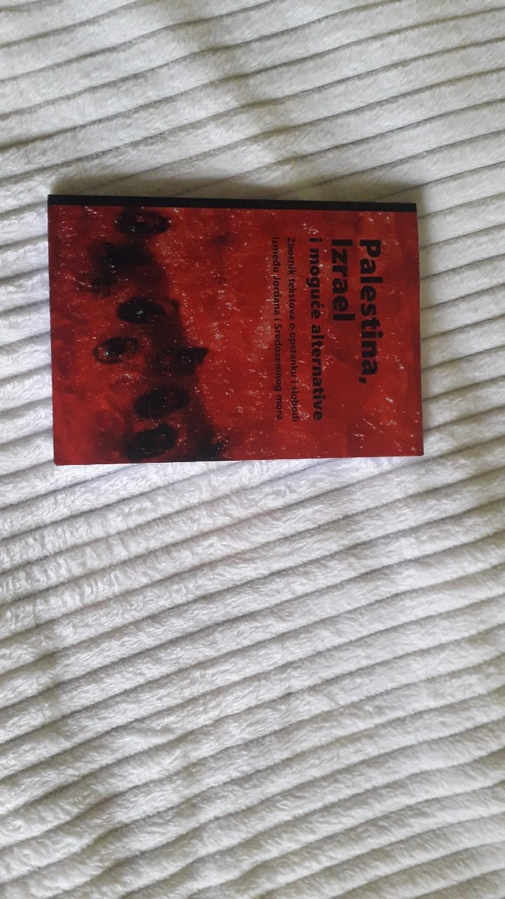
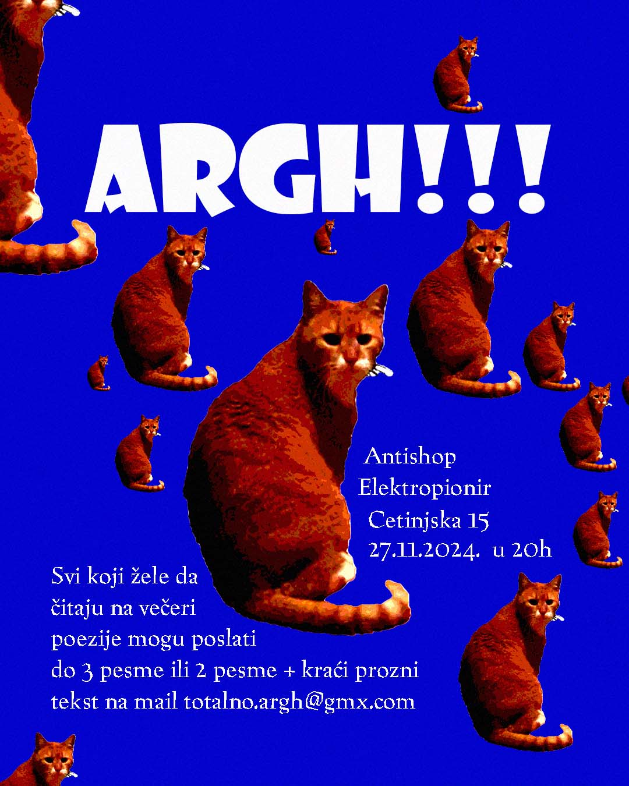
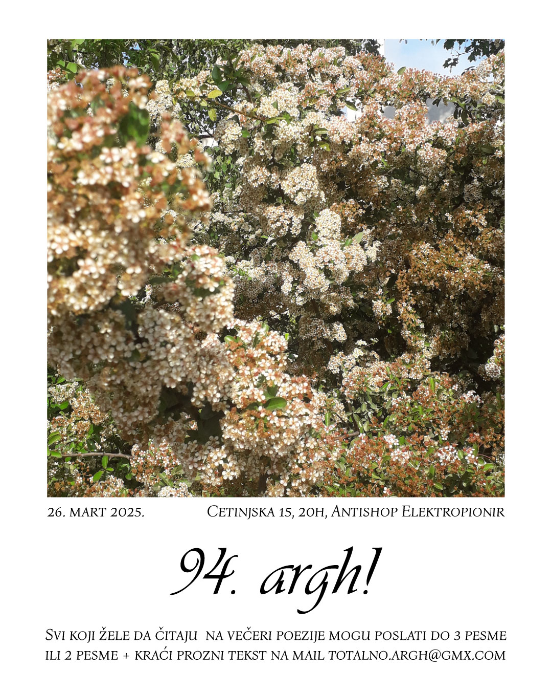
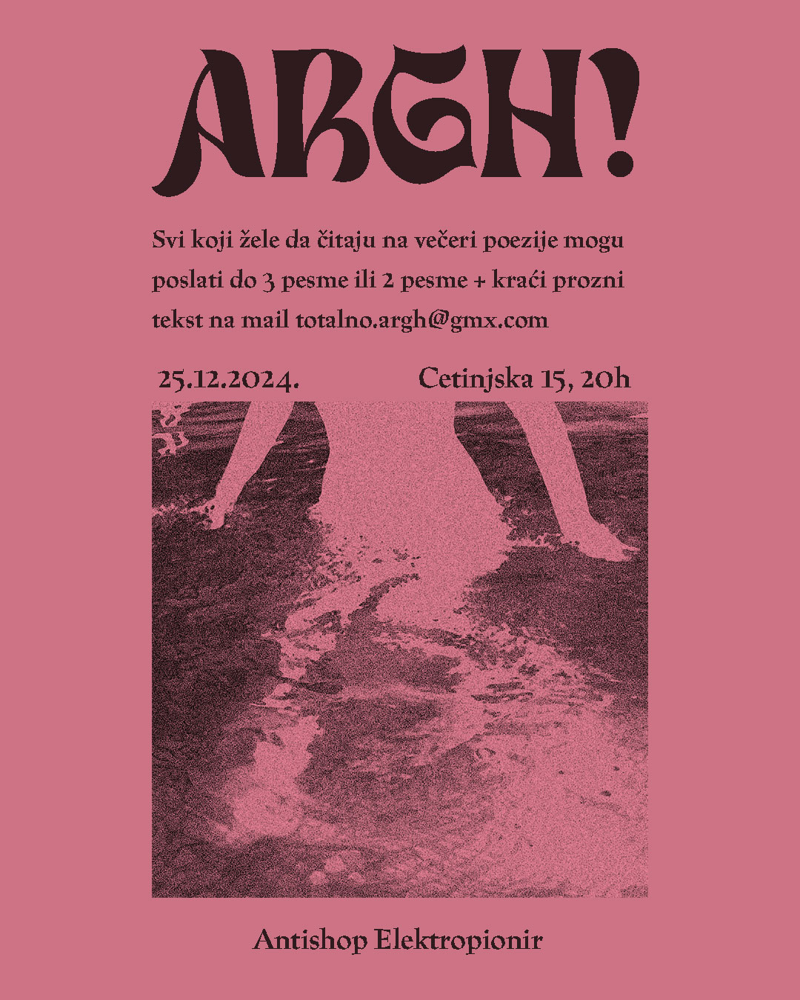

,,Palestina, Izrael i moguće alternative" je publikacija nastala u
okviru CK-13 i Infoteke, podržana od strane Rekonstrukcije ženski
fond. Imala sam čast da učestvujem u ovom projektu i osmislim dizajn
korica.

Instagram objave za najavu ARGH poetskih večeri.


